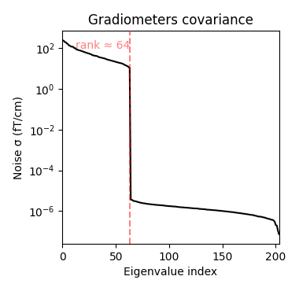

Note
Go to the end to download the full example code.
Compute evoked ERS source power using DICS, LCMV beamformer, and dSPM#
Here we examine 3 ways of localizing event-related synchronization (ERS) of beta band activity in this dataset: Somatosensory using DICS, LCMV beamformer, and dSPM applied to active and baseline covariance matrices.
# Authors: Luke Bloy <luke.bloy@gmail.com>
# Eric Larson <larson.eric.d@gmail.com>
#
# License: BSD-3-Clause
# Copyright the MNE-Python contributors.
import numpy as np
import mne
from mne.beamformer import apply_dics_csd, apply_lcmv_cov, make_dics, make_lcmv
from mne.cov import compute_covariance
from mne.datasets import somato
from mne.minimum_norm import apply_inverse_cov, make_inverse_operator
from mne.time_frequency import csd_morlet
print(__doc__)
Reading the raw data and creating epochs:
data_path = somato.data_path()
subject = "01"
task = "somato"
raw_fname = data_path / f"sub-{subject}" / "meg" / f"sub-{subject}_task-{task}_meg.fif"
# crop to 5 minutes to save memory
raw = mne.io.read_raw_fif(raw_fname).crop(0, 300)
# We are interested in the beta band (12-30 Hz)
raw.load_data().filter(12, 30)
# The DICS beamformer currently only supports a single sensor type.
# We'll use the gradiometers in this example.
picks = mne.pick_types(raw.info, meg="grad", exclude="bads")
# Read epochs
events = mne.find_events(raw)
epochs = mne.Epochs(
raw, events, event_id=1, tmin=-1.5, tmax=2, picks=picks, preload=True, decim=3
)
# Read forward operator and point to freesurfer subject directory
fname_fwd = (
data_path / "derivatives" / f"sub-{subject}" / f"sub-{subject}_task-{task}-fwd.fif"
)
subjects_dir = data_path / "derivatives" / "freesurfer" / "subjects"
fwd = mne.read_forward_solution(fname_fwd)
Opening raw data file /home/circleci/mne_data/MNE-somato-data/sub-01/meg/sub-01_task-somato_meg.fif...
Range : 237600 ... 506999 = 791.189 ... 1688.266 secs
Ready.
Reading 0 ... 90092 = 0.000 ... 299.999 secs...
Filtering raw data in 1 contiguous segment
Setting up band-pass filter from 12 - 30 Hz
FIR filter parameters
---------------------
Designing a one-pass, zero-phase, non-causal bandpass filter:
- Windowed time-domain design (firwin) method
- Hamming window with 0.0194 passband ripple and 53 dB stopband attenuation
- Lower passband edge: 12.00
- Lower transition bandwidth: 3.00 Hz (-6 dB cutoff frequency: 10.50 Hz)
- Upper passband edge: 30.00 Hz
- Upper transition bandwidth: 7.50 Hz (-6 dB cutoff frequency: 33.75 Hz)
- Filter length: 331 samples (1.102 s)
Finding events on: STI 014
37 events found on stim channel STI 014
Event IDs: [1]
Not setting metadata
37 matching events found
Setting baseline interval to [-1.498464098687909, 0.0] s
Applying baseline correction (mode: mean)
0 projection items activated
Using data from preloaded Raw for 37 events and 1052 original time points (prior to decimation) ...
0 bad epochs dropped
Reading forward solution from /home/circleci/mne_data/MNE-somato-data/derivatives/sub-01/sub-01_task-somato-fwd.fif...
Reading a source space...
[done]
Reading a source space...
[done]
2 source spaces read
Desired named matrix (kind = 3523 (FIFF_MNE_FORWARD_SOLUTION_GRAD)) not available
Read MEG forward solution (8155 sources, 306 channels, free orientations)
Source spaces transformed to the forward solution coordinate frame
Compute covariances#
ERS activity starts at 0.5 seconds after stimulus onset. Because these data have been processed by MaxFilter directly (rather than MNE-Python’s version), we have to be careful to compute the rank with a more conservative threshold in order to get the correct data rank (64). Once this is used in combination with an advanced covariance estimator like “shrunk”, the rank will be correctly preserved.
rank = mne.compute_rank(epochs, tol=1e-6, tol_kind="relative")
active_win = (0.5, 1.5)
baseline_win = (-1, 0)
baseline_cov = compute_covariance(
epochs,
tmin=baseline_win[0],
tmax=baseline_win[1],
method="shrunk",
rank=rank,
verbose=True,
)
active_cov = compute_covariance(
epochs,
tmin=active_win[0],
tmax=active_win[1],
method="shrunk",
rank=rank,
verbose=True,
)
# Weighted averaging is already in the addition of covariance objects.
common_cov = baseline_cov + active_cov
baseline_cov.plot(epochs.info)
- 
Computing rank from data with rank=None
Estimated rank (grad): 64
GRAD: rank 64 computed from 204 data channels with 0 projectors
Setting small GRAD eigenvalues to zero (without PCA)
Reducing data rank from 204 -> 64
Estimating covariance using SHRUNK
Done.
Number of samples used : 3737
[done]
Setting small GRAD eigenvalues to zero (without PCA)
Reducing data rank from 204 -> 64
Estimating covariance using SHRUNK
Done.
Number of samples used : 3737
[done]
Computing rank from covariance with rank=None
Using tolerance 2.5e-13 (2.2e-16 eps * 204 dim * 5.6 max singular value)
Estimated rank (grad): 64
GRAD: rank 64 computed from 204 data channels with 0 projectors
Compute some source estimates#
Here we will use DICS, LCMV beamformer, and dSPM.
See Compute source power using DICS beamformer for more information about DICS.
def _gen_dics(active_win, baseline_win, epochs):
freqs = np.logspace(np.log10(12), np.log10(30), 9)
csd = csd_morlet(epochs, freqs, tmin=-1, tmax=1.5, decim=20)
csd_baseline = csd_morlet(
epochs, freqs, tmin=baseline_win[0], tmax=baseline_win[1], decim=20
)
csd_ers = csd_morlet(
epochs, freqs, tmin=active_win[0], tmax=active_win[1], decim=20
)
filters = make_dics(
epochs.info,
fwd,
csd.mean(),
pick_ori="max-power",
reduce_rank=True,
real_filter=True,
rank=rank,
)
stc_base, freqs = apply_dics_csd(csd_baseline.mean(), filters)
stc_act, freqs = apply_dics_csd(csd_ers.mean(), filters)
stc_act /= stc_base
return stc_act
# generate lcmv source estimate
def _gen_lcmv(active_cov, baseline_cov, common_cov):
filters = make_lcmv(
epochs.info, fwd, common_cov, reg=0.05, noise_cov=None, pick_ori="max-power"
)
stc_base = apply_lcmv_cov(baseline_cov, filters)
stc_act = apply_lcmv_cov(active_cov, filters)
stc_act /= stc_base
return stc_act
# generate mne/dSPM source estimate
def _gen_mne(active_cov, baseline_cov, common_cov, fwd, info, method="dSPM"):
inverse_operator = make_inverse_operator(info, fwd, common_cov)
stc_act = apply_inverse_cov(
active_cov, info, inverse_operator, method=method, verbose=True
)
stc_base = apply_inverse_cov(
baseline_cov, info, inverse_operator, method=method, verbose=True
)
stc_act /= stc_base
return stc_act
# Compute source estimates
stc_dics = _gen_dics(active_win, baseline_win, epochs)
stc_lcmv = _gen_lcmv(active_cov, baseline_cov, common_cov)
stc_dspm = _gen_mne(active_cov, baseline_cov, common_cov, fwd, epochs.info)
Computing cross-spectral density from epochs...
0%| | CSD epoch blocks : 0/37 [00:00<?, ?it/s]
3%|▎ | CSD epoch blocks : 1/37 [00:00<00:03, 11.98it/s]
5%|▌ | CSD epoch blocks : 2/37 [00:00<00:02, 12.23it/s]
8%|▊ | CSD epoch blocks : 3/37 [00:00<00:02, 12.47it/s]
11%|█ | CSD epoch blocks : 4/37 [00:00<00:02, 12.08it/s]
14%|█▎ | CSD epoch blocks : 5/37 [00:00<00:02, 11.67it/s]
16%|█▌ | CSD epoch blocks : 6/37 [00:00<00:02, 11.89it/s]
19%|█▉ | CSD epoch blocks : 7/37 [00:00<00:02, 11.80it/s]
22%|██▏ | CSD epoch blocks : 8/37 [00:00<00:02, 11.75it/s]
24%|██▍ | CSD epoch blocks : 9/37 [00:00<00:02, 11.75it/s]
27%|██▋ | CSD epoch blocks : 10/37 [00:00<00:02, 11.72it/s]
30%|██▉ | CSD epoch blocks : 11/37 [00:00<00:02, 11.73it/s]
32%|███▏ | CSD epoch blocks : 12/37 [00:01<00:02, 11.57it/s]
35%|███▌ | CSD epoch blocks : 13/37 [00:01<00:02, 11.34it/s]
38%|███▊ | CSD epoch blocks : 14/37 [00:01<00:02, 11.13it/s]
41%|████ | CSD epoch blocks : 15/37 [00:01<00:02, 10.98it/s]
43%|████▎ | CSD epoch blocks : 16/37 [00:01<00:01, 11.06it/s]
46%|████▌ | CSD epoch blocks : 17/37 [00:01<00:01, 11.16it/s]
49%|████▊ | CSD epoch blocks : 18/37 [00:01<00:01, 11.21it/s]
51%|█████▏ | CSD epoch blocks : 19/37 [00:01<00:01, 11.21it/s]
54%|█████▍ | CSD epoch blocks : 20/37 [00:01<00:01, 11.06it/s]
57%|█████▋ | CSD epoch blocks : 21/37 [00:01<00:01, 10.93it/s]
59%|█████▉ | CSD epoch blocks : 22/37 [00:01<00:01, 10.82it/s]
62%|██████▏ | CSD epoch blocks : 23/37 [00:02<00:01, 10.73it/s]
65%|██████▍ | CSD epoch blocks : 24/37 [00:02<00:01, 10.69it/s]
68%|██████▊ | CSD epoch blocks : 25/37 [00:02<00:01, 10.61it/s]
70%|███████ | CSD epoch blocks : 26/37 [00:02<00:01, 10.53it/s]
73%|███████▎ | CSD epoch blocks : 27/37 [00:02<00:00, 10.46it/s]
76%|███████▌ | CSD epoch blocks : 28/37 [00:02<00:00, 10.46it/s]
78%|███████▊ | CSD epoch blocks : 29/37 [00:02<00:00, 10.63it/s]
81%|████████ | CSD epoch blocks : 30/37 [00:02<00:00, 10.79it/s]
84%|████████▍ | CSD epoch blocks : 31/37 [00:02<00:00, 10.92it/s]
86%|████████▋ | CSD epoch blocks : 32/37 [00:02<00:00, 11.15it/s]
89%|████████▉ | CSD epoch blocks : 33/37 [00:02<00:00, 11.27it/s]
92%|█████████▏| CSD epoch blocks : 34/37 [00:03<00:00, 11.40it/s]
95%|█████████▍| CSD epoch blocks : 35/37 [00:03<00:00, 11.58it/s]
97%|█████████▋| CSD epoch blocks : 36/37 [00:03<00:00, 11.69it/s]
100%|██████████| CSD epoch blocks : 37/37 [00:03<00:00, 11.79it/s]
100%|██████████| CSD epoch blocks : 37/37 [00:03<00:00, 11.41it/s]
[done]
Computing cross-spectral density from epochs...
0%| | CSD epoch blocks : 0/37 [00:00<?, ?it/s]
3%|▎ | CSD epoch blocks : 1/37 [00:00<00:02, 16.16it/s]
5%|▌ | CSD epoch blocks : 2/37 [00:00<00:02, 16.44it/s]
8%|▊ | CSD epoch blocks : 3/37 [00:00<00:02, 16.47it/s]
11%|█ | CSD epoch blocks : 4/37 [00:00<00:01, 16.60it/s]
14%|█▎ | CSD epoch blocks : 5/37 [00:00<00:01, 16.69it/s]
16%|█▌ | CSD epoch blocks : 6/37 [00:00<00:01, 16.71it/s]
19%|█▉ | CSD epoch blocks : 7/37 [00:00<00:01, 16.82it/s]
22%|██▏ | CSD epoch blocks : 8/37 [00:00<00:01, 16.87it/s]
24%|██▍ | CSD epoch blocks : 9/37 [00:00<00:01, 16.88it/s]
27%|██▋ | CSD epoch blocks : 10/37 [00:00<00:01, 16.93it/s]
30%|██▉ | CSD epoch blocks : 11/37 [00:00<00:01, 16.83it/s]
32%|███▏ | CSD epoch blocks : 12/37 [00:00<00:01, 16.63it/s]
35%|███▌ | CSD epoch blocks : 13/37 [00:00<00:01, 16.33it/s]
38%|███▊ | CSD epoch blocks : 14/37 [00:00<00:01, 15.99it/s]
41%|████ | CSD epoch blocks : 15/37 [00:00<00:01, 15.72it/s]
43%|████▎ | CSD epoch blocks : 16/37 [00:01<00:01, 15.53it/s]
46%|████▌ | CSD epoch blocks : 17/37 [00:01<00:01, 15.54it/s]
49%|████▊ | CSD epoch blocks : 18/37 [00:01<00:01, 15.63it/s]
51%|█████▏ | CSD epoch blocks : 19/37 [00:01<00:01, 15.67it/s]
54%|█████▍ | CSD epoch blocks : 20/37 [00:01<00:01, 15.75it/s]
57%|█████▋ | CSD epoch blocks : 21/37 [00:01<00:01, 15.84it/s]
59%|█████▉ | CSD epoch blocks : 22/37 [00:01<00:00, 15.93it/s]
62%|██████▏ | CSD epoch blocks : 23/37 [00:01<00:00, 16.02it/s]
65%|██████▍ | CSD epoch blocks : 24/37 [00:01<00:00, 16.09it/s]
68%|██████▊ | CSD epoch blocks : 25/37 [00:01<00:00, 16.13it/s]
70%|███████ | CSD epoch blocks : 26/37 [00:01<00:00, 16.21it/s]
73%|███████▎ | CSD epoch blocks : 27/37 [00:01<00:00, 16.27it/s]
76%|███████▌ | CSD epoch blocks : 28/37 [00:01<00:00, 16.32it/s]
78%|███████▊ | CSD epoch blocks : 29/37 [00:01<00:00, 16.30it/s]
81%|████████ | CSD epoch blocks : 30/37 [00:01<00:00, 16.30it/s]
84%|████████▍ | CSD epoch blocks : 31/37 [00:01<00:00, 16.18it/s]
86%|████████▋ | CSD epoch blocks : 32/37 [00:01<00:00, 16.09it/s]
89%|████████▉ | CSD epoch blocks : 33/37 [00:02<00:00, 16.11it/s]
92%|█████████▏| CSD epoch blocks : 34/37 [00:02<00:00, 15.86it/s]
95%|█████████▍| CSD epoch blocks : 35/37 [00:02<00:00, 15.50it/s]
97%|█████████▋| CSD epoch blocks : 36/37 [00:02<00:00, 15.15it/s]
100%|██████████| CSD epoch blocks : 37/37 [00:02<00:00, 15.17it/s]
100%|██████████| CSD epoch blocks : 37/37 [00:02<00:00, 15.64it/s]
[done]
Computing cross-spectral density from epochs...
0%| | CSD epoch blocks : 0/37 [00:00<?, ?it/s]
3%|▎ | CSD epoch blocks : 1/37 [00:00<00:02, 16.28it/s]
5%|▌ | CSD epoch blocks : 2/37 [00:00<00:02, 13.86it/s]
8%|▊ | CSD epoch blocks : 3/37 [00:00<00:02, 14.09it/s]
11%|█ | CSD epoch blocks : 4/37 [00:00<00:02, 13.84it/s]
14%|█▎ | CSD epoch blocks : 5/37 [00:00<00:02, 13.14it/s]
16%|█▌ | CSD epoch blocks : 6/37 [00:00<00:02, 13.57it/s]
19%|█▉ | CSD epoch blocks : 7/37 [00:00<00:02, 13.73it/s]
22%|██▏ | CSD epoch blocks : 8/37 [00:00<00:02, 14.14it/s]
24%|██▍ | CSD epoch blocks : 9/37 [00:00<00:01, 14.46it/s]
27%|██▋ | CSD epoch blocks : 10/37 [00:00<00:01, 14.76it/s]
30%|██▉ | CSD epoch blocks : 11/37 [00:00<00:01, 15.02it/s]
32%|███▏ | CSD epoch blocks : 12/37 [00:00<00:01, 15.24it/s]
35%|███▌ | CSD epoch blocks : 13/37 [00:00<00:01, 15.40it/s]
38%|███▊ | CSD epoch blocks : 14/37 [00:00<00:01, 15.54it/s]
41%|████ | CSD epoch blocks : 15/37 [00:00<00:01, 15.68it/s]
43%|████▎ | CSD epoch blocks : 16/37 [00:01<00:01, 15.82it/s]
46%|████▌ | CSD epoch blocks : 17/37 [00:01<00:01, 15.95it/s]
49%|████▊ | CSD epoch blocks : 18/37 [00:01<00:01, 16.05it/s]
51%|█████▏ | CSD epoch blocks : 19/37 [00:01<00:01, 16.15it/s]
54%|█████▍ | CSD epoch blocks : 20/37 [00:01<00:01, 16.23it/s]
57%|█████▋ | CSD epoch blocks : 21/37 [00:01<00:00, 16.31it/s]
59%|█████▉ | CSD epoch blocks : 22/37 [00:01<00:00, 16.37it/s]
62%|██████▏ | CSD epoch blocks : 23/37 [00:01<00:00, 16.45it/s]
65%|██████▍ | CSD epoch blocks : 24/37 [00:01<00:00, 16.51it/s]
68%|██████▊ | CSD epoch blocks : 25/37 [00:01<00:00, 16.58it/s]
70%|███████ | CSD epoch blocks : 26/37 [00:01<00:00, 16.64it/s]
73%|███████▎ | CSD epoch blocks : 27/37 [00:01<00:00, 16.68it/s]
76%|███████▌ | CSD epoch blocks : 28/37 [00:01<00:00, 16.71it/s]
78%|███████▊ | CSD epoch blocks : 29/37 [00:01<00:00, 16.74it/s]
81%|████████ | CSD epoch blocks : 30/37 [00:01<00:00, 16.76it/s]
84%|████████▍ | CSD epoch blocks : 31/37 [00:01<00:00, 16.78it/s]
86%|████████▋ | CSD epoch blocks : 32/37 [00:01<00:00, 16.82it/s]
89%|████████▉ | CSD epoch blocks : 33/37 [00:02<00:00, 16.87it/s]
92%|█████████▏| CSD epoch blocks : 34/37 [00:02<00:00, 16.90it/s]
95%|█████████▍| CSD epoch blocks : 35/37 [00:02<00:00, 16.94it/s]
97%|█████████▋| CSD epoch blocks : 36/37 [00:02<00:00, 16.97it/s]
100%|██████████| CSD epoch blocks : 37/37 [00:02<00:00, 16.97it/s]
100%|██████████| CSD epoch blocks : 37/37 [00:02<00:00, 16.47it/s]
[done]
Identifying common channels ...
Dropped the following channels:
['MEG 1211', 'MEG 0331', 'MEG 1621', 'MEG 1731', 'MEG 1121', 'MEG 2241', 'MEG 0941', 'MEG 0441', 'MEG 0621', 'MEG 0231', 'MEG 2631', 'MEG 1911', 'MEG 0911', 'MEG 1011', 'MEG 0611', 'MEG 0431', 'MEG 1741', 'MEG 2231', 'MEG 1131', 'MEG 1631', 'MEG 1821', 'MEG 0421', 'MEG 1141', 'MEG 1441', 'MEG 1521', 'MEG 1921', 'MEG 0321', 'MEG 2021', 'MEG 2411', 'MEG 2341', 'MEG 0341', 'MEG 0721', 'MEG 2311', 'MEG 1711', 'MEG 1321', 'MEG 2131', 'MEG 0711', 'MEG 0241', 'MEG 1221', 'MEG 2331', 'MEG 0631', 'MEG 1111', 'MEG 0821', 'MEG 1021', 'MEG 2011', 'MEG 1931', 'MEG 1341', 'MEG 2111', 'MEG 0211', 'MEG 1431', 'MEG 0521', 'MEG 0741', 'MEG 1531', 'MEG 1331', 'MEG 0411', 'MEG 2541', 'MEG 1841', 'MEG 0311', 'MEG 1721', 'MEG 2221', 'MEG 1941', 'MEG 0121', 'MEG 1641', 'MEG 2321', 'MEG 1831', 'MEG 1041', 'MEG 1241', 'MEG 0111', 'MEG 2521', 'MEG 1811', 'MEG 2431', 'MEG 0531', 'MEG 0811', 'MEG 0541', 'MEG 0511', 'MEG 2211', 'MEG 1421', 'MEG 1511', 'MEG 2441', 'MEG 2031', 'MEG 0221', 'MEG 0731', 'MEG 2621', 'MEG 2041', 'MEG 0641', 'MEG 2141', 'MEG 1611', 'MEG 1411', 'MEG 0931', 'MEG 0921', 'MEG 0131', 'MEG 1541', 'MEG 1031', 'MEG 2611', 'MEG 2641', 'MEG 0141', 'MEG 1231', 'MEG 2421', 'MEG 2511', 'MEG 2121', 'MEG 1311', 'MEG 2531']
Computing inverse operator with 204 channels.
204 out of 204 channels remain after picking
Selected 204 channels
Creating the depth weighting matrix...
Whitening the forward solution.
Computing rank from covariance with rank={'grad': 64}
Setting small GRAD eigenvalues to zero (without PCA)
Creating the source covariance matrix
Adjusting source covariance matrix.
Computing rank from covariance with rank={'grad': 64}
Computing DICS spatial filters...
Computing beamformer filters for 8155 sources
Filter computation complete
Computing DICS source power...
[done]
Computing DICS source power...
[done]
Computing rank from covariance with rank='info'
GRAD: rank 64 after 0 projectors applied to 204 channels
Computing rank from covariance with rank='info'
GRAD: rank 64 after 0 projectors applied to 204 channels
Making LCMV beamformer with rank {'grad': 64}
Computing inverse operator with 204 channels.
204 out of 306 channels remain after picking
Selected 204 channels
Whitening the forward solution.
Computing rank from covariance with rank={'grad': 64}
Setting small GRAD eigenvalues to zero (without PCA)
Creating the source covariance matrix
Adjusting source covariance matrix.
Computing beamformer filters for 8155 sources
Filter computation complete
Converting forward solution to surface orientation
No patch info available. The standard source space normals will be employed in the rotation to the local surface coordinates....
Converting to surface-based source orientations...
[done]
Computing inverse operator with 204 channels.
204 out of 306 channels remain after picking
Selected 204 channels
Creating the depth weighting matrix...
204 planar channels
limit = 7615/8155 = 10.004172
scale = 5.17919e-08 exp = 0.8
Applying loose dipole orientations to surface source spaces: 0.2
Whitening the forward solution.
Computing rank from covariance with rank=None
Using tolerance 2.6e-13 (2.2e-16 eps * 204 dim * 5.8 max singular value)
Estimated rank (grad): 64
GRAD: rank 64 computed from 204 data channels with 0 projectors
Setting small GRAD eigenvalues to zero (without PCA)
Creating the source covariance matrix
Adjusting source covariance matrix.
Computing SVD of whitened and weighted lead field matrix.
largest singular value = 2.37509
scaling factor to adjust the trace = 9.81852e+18 (nchan = 204 nzero = 140)
Preparing the inverse operator for use...
Scaled noise and source covariance from nave = 1 to nave = 1
Created the regularized inverter
The projection vectors do not apply to these channels.
Created the whitener using a noise covariance matrix with rank 64 (140 small eigenvalues omitted)
Computing noise-normalization factors (dSPM)...
[done]
Applying inverse operator to "cov"...
Picked 204 channels from the data
Computing inverse...
Eigenleads need to be weighted ...
Computing residual...
Explained 92.5% variance
dSPM...
Combining the current components...
[done]
Preparing the inverse operator for use...
Scaled noise and source covariance from nave = 1 to nave = 1
Created the regularized inverter
The projection vectors do not apply to these channels.
Created the whitener using a noise covariance matrix with rank 64 (140 small eigenvalues omitted)
Computing noise-normalization factors (dSPM)...
[done]
Applying inverse operator to "cov"...
Picked 204 channels from the data
Computing inverse...
Eigenleads need to be weighted ...
Computing residual...
Explained 92.5% variance
dSPM...
Combining the current components...
[done]
Plot source estimates#
DICS:
brain_dics = stc_dics.plot(
hemi="rh",
subjects_dir=subjects_dir,
subject=subject,
time_label="DICS source power in the 12-30 Hz frequency band",
)
Using control points [1.5205929 1.6585548 2.71744034]
LCMV:
brain_lcmv = stc_lcmv.plot(
hemi="rh",
subjects_dir=subjects_dir,
subject=subject,
time_label="LCMV source power in the 12-30 Hz frequency band",
)
Using control points [1.47987582 1.58616344 3.05107661]
dSPM:
brain_dspm = stc_dspm.plot(
hemi="rh",
subjects_dir=subjects_dir,
subject=subject,
time_label="dSPM source power in the 12-30 Hz frequency band",
)
Using control points [1.71170124 1.88797906 3.99261731]
For more advanced usage, see Compute evoked ERS source power using DICS, LCMV beamformer, and dSPM.
Total running time of the script: (0 minutes 31.573 seconds)